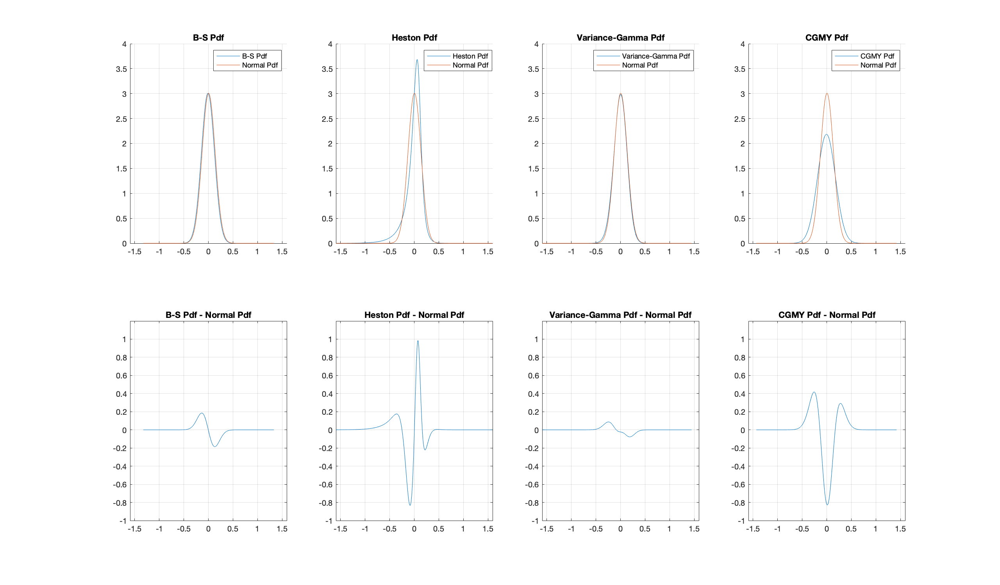

Federico Baldi Lanfranchi federico.baldilanfranchi@student.unisg.ch
Peter la Cour peter.lacour@student.unisg.ch
In the following, we compute prices for one day of European put and call options on the S&P 500 Index through the COS method, pioneered by Fang and Oosterle (2008). For this study, we consider options expiring on the March 20, 2020, whose maturity is close to one year at the time of writing, March 24, 2019.
We compare estimated prices under four underlying diffusion assumptions, namely the Black-Scholes, Heston, Variance Gamma and CGMY models. In doing so, we employ calibrated parameters from some of the original papers. Consequently, we cannot make statements about the accuracy of the COS method with respect to other numerical option pricing techniques at this stage, since realised option prices should instead reflect current market parameters. We leave this analysis to successive work, where such parameters will be calibrated through numerical optimization. We thus take the Black-Scholes model, for which an analytical pricing formula is available, as a reference framework. We then comment on whether COS prices capture the intended deviation of other models from the BS setup, despite truncation of the domain and finite precision. We find that, in general, this seems to be the case.
The COS mehod (Fang and Oosterlee, 2008) is a novel option pricing method based on a Fourier-cosine expansion of the density function. The algorithm can be applied to european plain vanilla options and to some options with early exercise rights. Cosine expansions offer an alternative to the industry-standard Fast Fourier Transform (FFT) approach developed in Carr and Madan (1999). Both FFT and the COS method exploit knowledge of the characteristic function of the underlying process, which is often given, even when the density is unknown. However, the COS method can be significantly faster, while also circumventing some of the issues with the FFT approach, which are briefly highlighted in next section. FFT-based methods' for option pricing typically exhibit second order accuracy with computational complexity (Fang and Oosterlee, 2008). The COS method instead can achieve exponential convergence, while keeping computational complexity linear.
Since the characteristic function is equivalent to the Fourier transform of the density function in the risk-neutral domain the pricing problem can be solved in Fourier domain. FFT then relies on numerical integration through quadrature rules to solve the inverse Fourier integral and tranform the solution back to the time domain. The Fourier transform is taken with respect to the log strike price , with
. The price for a European call option can then be expressed as:
Where denotes the risk-neutral density function. When
goes to
, the call price converges to
. As a result, the call pricing function is not square integrable, and its Fourier integral is not well defined. Since FFT evaluates the characteristic function at
, the introduction of a damping parameter
is necessary to in order to shift the singularity away from the origin. Lewis (2001) and Lee (2004) show how this is equivalent to evaluating a contour integral in the complex plane, where the pole is shifted away from the real line on the immaginary axis.
However, the Carr-Madan approach suffers from some disadvantages. First, quadrature rules employed for numerical integration can be inefficient due to the highly oscillatory nature of integrands. Further, for this same reason the choice of the damping parameter has profound implications in terms of efficiency. Higher values of can make integration less stable on the positive log-strike axis, so that the damping parameter must be chosen carefully. Oscillatory behaviour becomes more pronounced close to expiration, when the option approaches its intrisic value. Treating this issue requires a different adjustment factor based on the hyperbolic sine.
Another issue with the FFT method is that the number of evaluation arguments \(N\) must necessarily be a power of 2, which can be undesirable. Further, the grid size for the numerical integration is typically tied to the spacing between strike prices by the Nyquist relation:
where denotes the log price and
denotes the argument of the characteristic function. Choosing a fine grid to improve integration accuracy increases the spacing between strike prices at which option prices are computed. Strikes are then pushed deeper in- and out-of-the-money, leading to a lower number of option prices laying in the relevant region.
The COS method does not rely on numerical integration to price contingent claims. Rather, it replaces the entire density with its cosine series expansion. The cosine expansion is defined for functions with support on . Through change of variables, it can be generalised to functions with support on a generic finite interval
.
Where indicates that the first summand is divided by 2. The density inside the equation for the
terms can be substituted through an approximation of the characteristic function on the
interval, which introduces a first error component, i.e.
. This gives
Which can be approximated by:
We then substitute for
in the infinite series and truncate the sum, which introduces a second source of approximation error. The price of a contingent claim, which is given by an expectation in terms of the risk neutral density, can then be computed. In the case of a call option the equation reads:
where call is the integral resulting from the inversion of summation and integral sign, which can be computed analytically. In particular:
Analytic forms for and
are given in Fang and Oosterlee (2008).
The Black-Scholes model is arguably the most famous option pricing model. The model assumes that the underlying asset process can be described by a Geometric Brownian Motion. One of the main assumptions of the model is that the logarithmic returns are normally distributed. The stochastic differential equation takes the form:
where is the drift term and
is the variance of the process.
From this, by making a change of measure using the risk neutral probability and after some manipulations, one gets the characteristic function of the Black Scholes model which follows a normal distribution:
Following Schmelzle (2010) page 39.
Click to see Matlab code
function phi_bs = bs_char_fn_v1(u_0, a, b, k, T)
%{
This code computes the Characteristic Function for the Black-Scholes Model
Notation follows Schmelzle (2010), eq. 5.10, p. 37
Authors : Baldi Lanfranchi, Federico
: La Cour, Peter
Version : 1.0 (21.03.2019)
: 2.0 (23.03.2019) Added internal computation of omegas
phi_bs = bs_char_fn_v1(u_0, a, b, k, T)
Inputs : u_0 - variance
: T - time to maturity
: a - Cosine argument (lower truncation bound)
: b - Cosine argument (upper truncation bound)
: k - Vector of N evaluation intervals
Outputs : phi_bs - characteristic function values [0:N-1] vector
%}
% Vector of N evaluation arguments for the characteristic function
omega = k .* pi / (b - a);
phi_bs = exp(( -0.5 * u_0 ) * 1i * T .* omega - 0.5 * u_0 * T * omega .^2);
The Heston model incorporates a stochastic volatility term and can be described by this system of stochastic differential equations:
where is the drift term
is the stochastic variance,
is the initial volatility,
is the long term variance,
is the speed of mean reversion of the stochastic volatility,
is the volatility of the volatility and
and
are two correlated Wiener processes.
The characteristic function of the log strike price can be written as:
For this project the parameters were taken from Fang and Osterle (2008) with = 1.5768,
= 0.0398,
= 0.0175,
= 0.5751 and
= -0.5711.
For more documentation on the Heston model, see Heston (1993) and for information on the Heston model with the Cosine Method see Fang and Oosterlee (2009).
Click to see Matlab code
function phi_hest = heston_char_fn_v2(mu, lambda, u_bar, u_0, eta, rho, a, b, k, T)
%{
This code computes the Characteristic Function for the Heston Model
Notation follows Fang and Oosterlee (2009), eq. 32, p. 8
Authors : Baldi Lanfranchi, Federico
: La Cour, Peter
Version : 1.0 (21.03.2019)
: 2.0 (23.03.2019) Added internal computation of omegas
phi_hest = heston_char_fn_v2(mu, lambda, u_bar, u_0, eta, rho, a, b, k, T)
Inputs : mu - log price drift rate
: lambda - speed of mean reversion
: u_bar - mean (long run) volatility
: u_0 - initial volatility
: eta - volatility of the volatility (vol of vol)
: rho - correlation between Wiener processes (W1 and W2)
: T - time to maturity
: a - Cosine argument (lower truncation bound)
: b - Cosine argument (upper truncation bound)
: k - Vector of N evaluation intervals
Outputs : phi_hest - characteristic function values [0:N-1] vector
%}
% Vector of N evaluation arguments for the characteristic function
omega = k .* pi / (b - a);
% D and G parameters: Fang and Oosterlee (2008) p. 8
D = sqrt( (lambda - 1i * rho * eta * omega) .^ 2 + (omega .^ 2 + 1i * omega) * eta ^ 2 );
G = (lambda - 1i * rho * eta * omega - D) ./ (lambda - 1i * rho * eta * omega + D);
% Characteristic function for the Heston Model:
% Fang and Oosterlee (2008) p. 8
phi_hest = exp( 1i * omega * mu * T + ...
(u_0 / eta ^ 2) * (1 - exp(-D * T)) ./ (1 - G .* exp(-D * T)) .* (lambda - 1i * rho * eta * omega - D) + ...
(lambda * u_bar / eta ^ 2 * (T * (lambda - 1i * rho * eta * omega - D) - 2 * log( (1 - G .* exp(-D * T)) ./ (1 - G) ))));
The Variance Gamma model is obtained by evaluating a Black-Scholes style Geometric Brownian Motion at a random time change given by a gamma process with the purpose to control the skewness and kurtosis of the return distribution. (Madan et al. 1998) This creates an inifinite jump diffusion process to describe asset returns.
The characteristic function of the log stock price of the Variance Gamma model can be written as:
where is a drift correction term and
is an additional drift term which is set to -0.1436 following an estimation of Madan et al. (1998).
is the variance rate of the gamma process and is set to 0.0403 following Carr et al. (2002).
Click to see Matlab code
function phi_vg = vg_char_fn(u_0, theta, a, b, k, T, v, S0, mu)
%{
This code computes the Characteristic Function for the Variance Gamma Process.
Notation follows Madan, Carr and Chang (1998), eq. 7, p. 8.
theta's average value in Madan, Carr, Chang (1998) is -0.1436,
theta = 0 gives the symmetric variance gamma,
theta < 0 incorporates negatively skewness in the model.
Source: A.Itkin ”Pricing options with VG model using FFT”.
The Variance Gamma and Related Financial Models. August 9, 2007 – p. 7
Authors : Baldi Lanfranchi, Federico
: La Cour, Peter
Version : 1.0 (21.03.2019)
: 2.0 (23.03.2019) Added internal computation of omegas
phi_vg = vg_char_fn(u_0, v, theta, a, b, k, T)
Inputs : u_0 - variance
: theta - drift term
: T - time to maturity
: omega - argument of the characteristic function
: v - variance rate
: a - Cosine argument (lower truncation bound)
: b - Cosine argument (upper truncation bound)
: k - Vector of N evaluation intervals
Outputs : phi_vg - characteristic function values [0:N-1] vector
%}
% Vector of N evaluation arguments for the characteristic function
omega = k .* pi / (b - a);
w = ( 1 / v ) * log(1 - theta * v - 0.5 * u_0 * v );
phi_vg = exp( 1i * omega .* ( log( S0 ) + ( mu + w ) * T ) ) ./ ( 1 - 1i * theta * v * omega + ( u_0 * v / 2 ) * omega.^2 ).^(T/v) ;
The CGMY model can be seen as an extension to the Variance Gamma model allowing for both allows for both diffusions and for jumps of both finite and infinite activity. (Carr et al., 2002)
The characteristic function of the CGMY model can be written as:
where C can be described as a measure of the overall level of activity of the process, G controls the exponential decay on the right of the process and M controls the exponential decay on the left. For example, if G < M, the left tail of the distribution would be heavier than the right tail. The parameter Y is used to model additional characteristics of the process and a description of it can be found in Carr et al. (2002) or in Vershik and Yor (1995).
For the purpose of this project the parameters C, G, M and Y were chosen according to Carr et al. (2002) with values of 24.79, 94.45, 95.79 and 0.2495 respectively.
Click to see Matlab code
function phi_cgmy = cgmy_char_fn(mu, u_0, C, G, Y, M, a, b, k, T)
%{
This code computes the Characteristic Function for the Finite Moment Log
Stable Levy Process. Notation follows Carr and Wu (2003), eq. 32, p. 8
Authors : Baldi Lanfranchi, Federico
: La Cour, Peter
Version : 1.0 (22.03.2019)
: 2.0 (23.03.2019) Added internal computation of omegas
phi_cgmy = cgmy_char_fn(mu, u_0, C, G, Y, M, a, b, k, T)
Inputs : mu - r - q
: T - time to maturity
: omega - argument of the characteristic function
: C - Carr Parameter
: G - Geman Parameter
: M - Madan Parameter
: Y - Yor Parameter
: u_0 - variance
Outputs : phi_cgmy - characteristic function values [0:N-1] vector
%}
% Vector of N evaluation arguments for the characteristic function
omega = k .* pi / (b - a);
% Characteristic function
phi_cgmy = exp( 1i * omega * ( mu ) * T - 0.5 * omega.^2 * u_0 * T) .* ...
exp( T * C * gamma( -Y ) * ( (M - 1i * omega).^Y - M^Y + (G + 1i * omega).^Y - G^Y ) );
The Figure below shows the distributional characteristics of the models considered in this project compared to a normal distribution. The distributions were obtained using the cosine expansion of the Fourier integral of the given characteristic function with the assumed parameters.
Unsurprisingly, the fit of the Black-Scholes model is very close to the normal distribution as the distribution of the assumed underlying process is normal. For the Heston model the distribution has a higher kurtosis and negative skewness such that the left tail is fatter compared to a normal.
Furthermore, the distribution of the assumed Variance Gamma model is close to normal (with a potential slight negative skew). This is mainly due to the choice of v and theta. Firstly, theta, the parameter controlling the skewness is chosen to be relatively small with -0.1436. Secondly, v, the parameter controlling the kurtosis, is chosen to be close to zero with 0.0403 and the Variance Gamma model approaches a geometric Brownian Motion as v approaches zero. (Daal and Madan, 2005)
Lastly, the CGMY distribution with the given parameters has a lower kurtosis and slight positive skew compared to the normal so that there is more probability mass in the tails of the distribution. The slight negative skew is due to M (95.79) being chosen to be larger than G (94.45) so that the left tail of the distribution is slightly heavier than the right tail. The kurtosis could be controlled via the parameter C which was chosen to be 24.79 following Carr et al. (2002).

The figure below compares the call prices calculated using the Cos-FFT method compared to the analytical Black-Scholes solutions for 66 SPX options of the same maturity with strikes ranging from 1275 to 3600. The time to maturity is 1.0056, i.e. approximately one year. The price of the underlying is 2800.7, the risk-free rate is assumed to be approximately 2.39% (the current 3-month T-bill rate) and the continuous dividend yield is assumed to be 1.92% taken from http://www.multpl.com/s-p-500-dividend-yield/table.
From the figure it is clear that all four models have significant deviations from the call option price implied by the analytical Black-Scholes model. However, this says nothing about the accuracy of the pricing and it should not be expected to be precise pricing given that the parameters were chosen arbitrarily from previous authors.
Still, the deviation from the analytical Black-Scholes from the Black-Scholes calculated using the COS-FFT-Method is somewhat surprising although in relative terms compared to the option price it is not large. Furthermore, the first three models approach a call option price of zero as the strike price increases as would be expected. The CGMY model, however, does not seem to converge as quickly and seems to have relatively large differences in pricing to other models. The most obvious reason for this could be that the CGMY takes the highest number of unknown parameters which induces this error.
Despite the fact that the parameters could cause errors, we would also expect to have truncation errors in the pricing. The truncation bounds were calculated following Fang and Oosterlee (2008) using the cumulants of the four models and the recommended multiplication of 12 for the Heston model and 10 for the other three models.
In addition to the truncation error, their is the possibility of the discretisation error having an influence on the pricing as well.